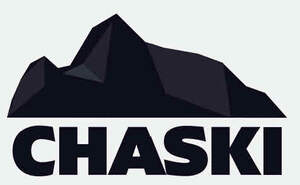

Trade Mark Journal No.2026/006 6 February 2026
UK00004320029 6 January 2026 (5,18,21,24,25,28,41)

- Class 5
- Dietary supplements and nutritional supplements for sports and fitness, being powders, tablets, pills, capsules, and preparations; protein supplements; creatine supplements; powdered superfoods; powdered fruit and vegetable supplements; berry powder; maca powder; acai powder; nutritional supplements originating from superfoods in powder or pill form; vitamin and mineral supplements; natural supplements for health and wellness; meal replacement powders and energy supplements for athletes; nutritional preparations for boosting health and aiding sports performance; white label sports supplements in powder or pill form.
- Class 18
- Bags; luggage; bags, rucksacks, backpacks, sports bags, holdalls, duffel bags, and all-purpose carrying bags; water bottle carriers; umbrellas; wallets; purses.
- Class 21
- Water bottles, flasks, drinking bottles, insulated bottles, shakers for mixing supplements, and containers for household or kitchen use.
- Class 24
- Sports towels.
- Class 25
- Clothing, footwear, and headgear; clothing; footwear; headgear; sports garments for all types of sports, comprising men’s and women’s t-shirts, shorts, vests, base layers, socks, underwear, jackets, yoga pants, beanies, hats, baseball caps, and other items for sporting or casual use; sportswear and athletic clothing for training and competition; general clothing for men, women and children, including shirts, trousers, dresses, skirts, suits, knitwear, sweatshirts, hoodies, jumpers, coats, rainwear, gloves, scarves, belts, sleepwear, and outerwear; footwear for sports and general use, including trainers, sneakers, boots, shoes, sandals, slippers; leisurewear and lifestyle apparel; sports accessories, namely sweat bands for the head and wrist.
- Class 28
- Sporting articles and equipment; sports equipment; sports accessories, namely training aids; gymnastic and exercise articles; fitness devices and equipment not included in other classes.
- Class 41
- Organisation, arranging and conducting of sporting events, activities and competitions; organisation and management of wellness retreats and training camps; educational services, tuition and training relating to sport, fitness, health and wellbeing; entertainment services in the nature of sports events; providing information, advice and consultancy relating to the organisation, participation and scheduling of sports events, wellness retreats and training camps; provision of facilities for sports, fitness activities and wellness retreats; organising and providing workshops, seminars and instructional courses related to sports, fitness and wellness.
Nine Elms Trading Limited
Representative: Harper James Ltd